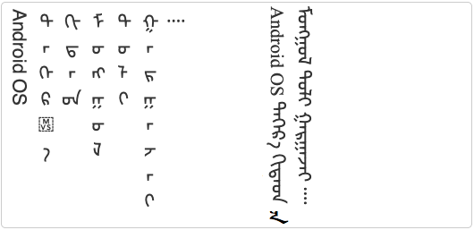
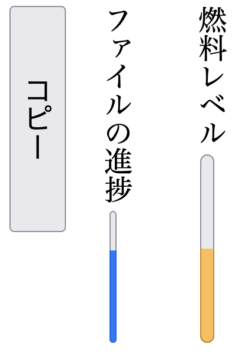

Styling vertical Chinese, Japanese, Korean and Mongolian text
This article explains how to use CSS to produce vertical text for languages such as Chinese, Japanese, Korean, and Mongolian. The CSS specification contains a lot of implementation-specific information. This article draws out the basic information that content authors need to create the more common features of vertical text. It also compares the theory and practice about what is possible.
Each section explains how you would mark up up your content according to the CSS spec (which is usually simple and straightforward), but then looks at what you currently have to do to achieve the same result in browsers that don't implement the standard property and value names. For more information, see Browser support.
Basic setup
Where it is supported, most of what you need should be achievable by applying the writing-mode property to the content that you want to be set vertically.
In Japanese, Chinese and Korean, lines start at the right side of the figure box and progress to the left. Latin script text typically runs down the page, with the letters rotated clockwise, while the Han characters remain upright. Any graphic also remains upright.
Chinese and Japanese vertical text lines run right to left. This example shows vertical Japanese text.
To produce the Japanese example above we would use the following CSS. You could either set this for the page as a whole, or if your page contains other, non-vertical content you could set it on a block element. In this example we set it for a div that contains 3 paragraphs.
div.vertical-panel {
writing-mode: vertical-rl;
}
Output in your browser:
国際化活動 W3C。
ワールド・ワイド・ウェッブを世界中に広げましょう。
In Mongolian the lines start at the left side of the containing box and progress to the right. The Latin script text still runs down the page, with the letters rotated clockwise, and the Mongolian characters display as expected.
Mongolian lines run left to right.
For Mongolian, use:
div.vertical-panel {
writing-mode: vertical-lr;
}
Output in your browser:
Android OS ᠳᠠᠭᠡᠷᠡ ᠬᠢᠳᠠᠳ ᠮᠣᠩᠭᠤᠯ ᠲᠣᠯᠢ ᠭᠠᠷᠭᠠᠵᠠᠢ ᠁
Apple iOS ᠳᠡᠭᠡᠷᠡ ᠬᠢᠳᠠᠳ ᠮᠣᠩᠭᠤᠯ ᠲᠣᠯᠢ ᠭᠠᠷᠭᠠᠵᠠᠢ ᠁
If you embed a right-to-left script in the text, such as Arabic or Hebrew, it will run from bottom to top along the line, and the top of the letters will be to the right. This is analogous to what happens in horizontal text.
In addition to horizontal-tb, which is the normal setting for horizontal text, there are two other property values for writing-mode, which are primarily intended for use with scripts which are normally horizontal but that are being used vertically for captions, table headers, UI elements, and so forth. They may only rarely be useful for vertical Chinese, Japanese, or Korean, and are unlikely to be useful at all for Mongolian.
The value sideways-rl makes all characters to which it is applied lie on their right side, including Han characters. The text runs from top to bottom, and lines progress from right to left.
Text set with the property sideways-rl.
thead th { writing-mode: sideways-rl; }
Output in your browser:
Total for each row (合計):
The sideways-lr value makes all characters lie on their left side. Left-to-right text starts at the bottom of the line, and lines progress from left to right.
Text set with the property sideways-lr.
thead th { writing-mode: sideways-lr; }
Output in your browser:
Total for each row (合計):
The vertical- values of writing-mode are really intended for use in setting a normal vertical context for CJK or Mongolian text. On the other hand, if your content is in English and you want some title text to run from bottom to top vertically, say on a book spine or in table header, you would use writing-mode:sideways-lr, not one of the vertical- values. (To make Arabic script text run up the page, you'd use sideways-rl.)
Changing the glyph orientation for embedded text
Default character orientation
In vertical text, certain characters are normally upright and others are normally rotated sideways. The Unicode Standard assigns a property to each character and browsers can use this to determine the default orientation of a given character. For example, ordinary number digits in vertical text lie on their side by default, whereas fullwidth digits and enclosed alphanumerics, such as ①, are upright by default.
In some cases, rotation may also involve a transformation of a character – for example (vertical) vs. (horizontal). This change requires more than simple rotation, and you will need to use a font that supports the alternative glyphs.
Occasionally you may come across situations where the browser doesn't support the expected default behavior, or the default is different according to the language of the text. However, most of the time, the browser will automatically do what you expect, on a per character basis.
For those situations where you may want to do something different from the default, the sections that follow will examine how to influence the rotation of characters.
Keeping embedded Latin text upright
Sometimes you may want to show embedded Latin letters standing upright, rather than running down the page, particularly for initialisms. Currently there are a number of ways of achieving this, but all have pros and cons.
Using dedicated CSS. One alternative is to apply the text-orientation property. Note how the letter i is upright in the following example.
Upright Latin text in vertical Japanese.
If you want to restyle characters so that they stand upright, use markup such as span or abbr to identify the relevant text so that you can apply a CSS property. In the examples below we put the Latin text in a span with a class name upright.
To make the letter i upright, you would then use this CSS declaration:
.upright {
text-orientation: upright;
}
Output in your browser:
『i』は、浅䈡の双子の兄であり、共犯者だ。
This option doesn't convert any characters to fullwidth. If you need to do so, you could apply additional CSS for that, if the browser supports it (see the next subsection).
Full-width transforms. If you transform the text into fullwidth characters, that may actually be sufficient on its own, since fullwidth characters are displayed upright by default.
Using a fullwidth transform to make Latin letters stand upright.
The letters 'W3C' in the above example initially ran down the page, but applying the fullwidth transform using the following CSS makes them stand upright.
.upright {
text-transform: full-width;
}
Output in your browser:
国际化活动W3C万维网联盟
This is appropriate for initialisms, but is not necessarily useful for all types of upright text, and note especially that this technique only works for Latin characters without accents! Text in other scripts will not have full-width equivalents, and so will need to use the approach described just below.
Using full-width characters. Another way to achieve this is to just use fullwidth characters, such as Ｗ３Ｃ. These will automatically be displayed upright by default. You don't need any markup in this case.
Of course, this also only works for Latin script text that doesn't include accents (since those are the only letters for which full-width variants exist).
Upright Latin text produced by using fullwidth characters.
Output in your browser:
国际化活动Ｗ３Ｃ万维网联盟
Embedding other languages upright
Mixtures of vertical Chinese, Japanese, Korean and Mongolian text should just work as expected, but for other non-Latin scripts and Latin text with accents you will need to use the text-orientation property to make the text stand upright.
If the Latin text contains accents or diacritics as separate characters alongside their base character, you should not see the combining characters on separate lines.
However, there are some scripts that present additional issues, although it should be said that these non-Latin scripts don't seem to be set upright often.
Expected rendering of Uighur words, devanagari syllables, and Latin characters with separate combining characters when set upright.
Embedded Arabic script text (shown in the two right-most lines above) is usually joined up. It is not possible to join Arabic characters when they are displayed upright, so isolated forms should be used. In addition, the order of characters is top to bottom when written upright, whereas Arabic script text that is rotated clockwise is read from bottom to top (because it is right-to-left).
Some complex scripts, such as Devanagari (used for Hindi, and shown in the two left-most lines above) require upright text to be split at syllable boundaries. Such syllables are currently not handled well by browsers in upright text runs.
The sideways value of text-orientation
CSS provides one more value of the text-orientation property: sideways. This value only works if you have also applied the values of writing-mode that begin with vertical-. This value of text-orientation makes all characters lie on their right side, including Han characters.
It is not generally needed for Chinese, Japanese and Mongolian content, because they usually keep Han and Kana characters upright. And for text in other scripts, it is recommended that you use the sideways-rl and sideways-lr values of writing-mode (see Sideways values of writing-mode) to render text sideways, rather than using this value of text-orientation.
Writing-modes vs. text-orientation. Note that the result of using this property-value pair with with writing-mode:vertical-lr (below left) is different from that seen when using writing-mode:sideways-lr (below right) since the text starts at the top of the block and glyphs lie on their right side. Note also that when a line breaks, lines progress in the opposite direction to what you would normally want, because lines read later appear to the right of (visually, above) those read earlier.
The result of using text-orientation:sideways with writing-mode:vertical-lr (left), vs. using writing-mode: sideways-lr (right).
Output in your browser:
Total for each row (合計):
Total for each row (合計):
WebKit hack. One place where this property value may be useful is to make Mongolian text look right in WebKit browsers. Using writing-mode:vertical-lr for vertical Mongolian text works fine in Blink and Gecko browsers, but WebKit browsers don't correctly orientate the glyphs. Adding this to your CSS can fix that, although hopefully WebKit will soon come into line with the other browser engines so that this is not needed.

Default display of Traditional Mongolian in WebKit browsers (left) vs. with application of text-orientation:sideways (right).
Horizontal-in-vertical text
It is common for short numbers of 2-3 digits (sometimes 4) and occasionally other runs of text, to run horizontally within the vertical flow. In Japanese this is called tate chū yoko. See the month and day digits in this example.
Tate chū yoko applied to 2-digit numbers.
Making inline digits run horizontally
The easiest way to apply this to numeric digits should be to use text-combine-upright with a digits x value. Unfortunately, it is still not supported by major browser engines.
It only works for digits in the ASCII range, and full-width Unicode codepoints are automatically converted to ASCII codepoints during the process. It doesn't work for other numbering systems, such as Arabic, Bengali, etc.
Let's suppose we have some HTML markup like the following, where the date 2015年5月22日 is inside a time element.
We can reproduce the rendering seen in the above example using the following CSS.
time {
text-combine-upright: digits 2;
}
Output in your browser:
今日はです。
This makes any double-digit numbers in the text run horizontally, but doesn't affect anything else. Note that you get the same effect by omitting the number after digits.
To fit longer numbers horizontally, change the number after digits. In the previous example 2015 is not horizontal. You could make it horizontal using text-combine-upright:digits 4. Then any numeric sequence up to four digits long will be horizontal. Four is the maximum number of digits you can layout horizontally in vertical text using this style.
Tate chu yoko applied to all numbers of 4 digits or less.
If you'd like the unaffected numbers to be full-width, you can use the following styling. Full-width characters are displayed upright by default.
time {
text-combine-upright: digits 2;
text-transform: full-width;
}
Fullwidth transform applied to non-affected digits.
Use dedicated markup where possible. For example, for dates and times, you could just apply the style to the time element.
You can set this style on block elements such as p or section and the style will only be applied to runs of numbers. Be aware, however, that you may need to correct the behavior if you set text-combine-upright for a whole paragraph or more if that content contains numbers like 10,000, since the comma interrupts the sequence of digits; the result will be 10 set horizontally, and ,000 set running down the page.
Making non-digit inline text run horizontally
If you want to apply horizontal layout to non-digit text, you have to use text-combine-upright:all and surround the text you want to be horizontal with markup. You can still use the digits value for the numbers, but you'll need to use all for the other stuff.
For example, given some content marked up as follows
we can produce the desired effect with the following CSS.
.tcy {
text-combine-upright: all;
}
Output in your browser:
...是有5012GI的話、...
Note how we used two spans, in order to clearly indicate the boundaries of the horizontal text. This styling has to be set on inline markup.
Tate chu yoko applied to other types of text.
The browser will try to squeeze the horizontal text into the width of a single character, so don't be too ambitious about how many characters you do this to. It is likely to be hard to read if you have more than three characters side-by-side.
Preventing inline text from running horizontally
Suppose you applied the digits styling to a whole section, and there's a number 10,000 in that section that you don't want to be affected. You can use the none value for that.
For example you could surround the number with a span with a class such as no-tcy that has the following styling.
.no-tcy {
text-combine-upright: none;
}
See the result in the figure below, where the right hand side shows before, and the left, after.
Text with text-combine-upright set to digits at the paragraph level. Corrected on the left by applying text-combine-upright:none to the number.
Choosing a font for horizontal inline text
The browser will try to use special narrow variants of the horizontal characters if they are included in the font being used (eg. OpenType's hwid and twid). After trying that, it will compress the glyphs to fit them in the space available. The former approach will produce a much nicer result, especially at larger sizes, therefore, it's worth using a font that has those extra glyphs (many do).
Forms, lists and tables
Forms
Text entry forms and select menus should flow down the page in vertical text, as illustrated in the following diagram. You will need to ensure that you specify sufficient vertical height to hold the form field.
Various form controls in vertically set text.
Note that vertical lines and controls flow right to left for Japanese and Chinese controls, but left to right for vertical Mongolian.
Output in your browser:
评语
姓名
语言
Progress bars, meters, and buttons
Controls representing progress bars and meters should also be vertical by default when the text direction is vertical. There is currently (at time of writing) an open question about whether progress indicators should run bottom-to-top, or vice versa. (The illustration shows bottom-to-top because that's what the Gecko engine does.)

Progress bar, meter, & button controls in vertically set text.
Output in your browser:
Lists
List content should also flow down the page in vertical text, with the counter at the top of the line, as illustrated in the following diagram.
List items in vertical text.
Output in your browser:
仕込む前に生芋を１／４ぐらいの大きさにカット。
すり潰した生芋
ながらのパケット式の定量練り、通称バタ練り機
Notice that in the figure above, the counters are arranged upright, with a dot separator alongside (ie. like tate chu yoko). The best way to make list counters upright is to use the following CSS.
li::marker { text-combine-upright: all; }
Output in your browser:
仕込む前に生芋を１／４ぐらいの大きさにカット。
すり潰した生芋
ながらのパケット式の定量練り、通称バタ練り機
Unfortunately, the text-combine-upright property isn't currently supported by all browsers. One way around that would be to use custom counter-styles which define fullwidth characters as the counters. Unfortunately, that is also not supported by all major browsers at the moment. The following figure shows how that looks in Gecko or Blink, which do support custom counter styles.
List items with fullwidth counters.
Output in your browser:
仕込む前に生芋を１／４ぐらいの大きさにカット。
すり潰した生芋
ながらのパケット式の定量練り、通称バタ練り機
Tables
In vertical content areas, table rows should run in the same direction as lines, ie. down the page, the rows should progress in the same direction as lines follow each other, and the text inside cells should also be vertical by default.
Captions. The numbers in the illustration above count cells in a row first, then move to the next row. As you can see, the columns are now horizontal.
The picture above shows a caption after the table. The placement of captions can be set using the caption-side property. The value bottom (used in the example above) will display the caption after the last row in the table, and top will display it before the first.
All the major browsers display the caption as vertical text on the right by default. The CSS Working Group voted not to allow block-start and block-end values, but to treat top and bottom as logical.
Using logical dimensions
You may decide that you want to align text along the left edge in horizontal text. Right-to-left scripts like Arabic, Hebrew, and Thaana tend to mirror-image horizontal text, so where you would apply left text alignment to English text, you would apply right alignment to text in those scripts.
How does it work, then, if you want to apply a vertical writing mode to that text?
A great deal of time and confusion can be saved by using 'logical' properties, rather than right, left, top and bottom, for things such as alignment.
CSS is developing the necessary keywords in the Logical Properties specification, which at the time of writing is still an Working Draft. Most of the properties described there, however, are already supported by browsers.
To go back to our example of text alignment, let's suppose that we want text to be right-aligned for horizontal left-to-right text, left-aligned for paragraphs of right-to-left text, such as Arabic, and bottom-aligned for vertically set text. We can achieve all those with a single keyword: text-align:end will produce the effect you need based on the direction of the content. To align in the other direction, use the value start.
Take a look at the following three boxes. We applied dir="rtl" to the Arabic one, and writing-mode:vertical-rl to the Japanese one. In our CSS we have aligned them all using text-align:end.
text-align:end takes into account the writing-mode of the text.
Output in your browser:
Article 1 All human beings are born free and equal in dignity and rights. They are endowed with reason and conscience and should act towards one another in a spirit of brotherhood.
المادة 1 يولد جميع الناس أحرارًا متساوين في الكرامة والحقوق. وقد وهبوا عقلاً وضميرًا وعليهم أن يعامل بعضهم بعضًا بروح الإخاء.
The new keywords being defined in the specification allow you not only to align things to one or other end of a line, but to align things relative to the containing box in a logical way. You will also be able to do other things, such as position and float items logically too.
Browser support
The article describes behavior for the following browser engines and versions. We will try to update the article as behavior changes.
Browser engine
Browser tested
Browsers using that engine
Gecko
Firefox v103
Firefox, Conkeror, etc.
Blink
Chrome v103
Chrome, Edge, Brave, Opera, Vivaldi, etc.
WebKit
Safari v15.5
Safari, iOS-based browsers, Yandex, UC Browser, etc.
User-driven test pages
The behaviour of browsers can be explored using the following user-controlled test pages:


 (vertical) vs.
(vertical) vs.  (horizontal). This change requires more than simple rotation, and you will need to use a font that supports the alternative glyphs.
(horizontal). This change requires more than simple rotation, and you will need to use a font that supports the alternative glyphs.